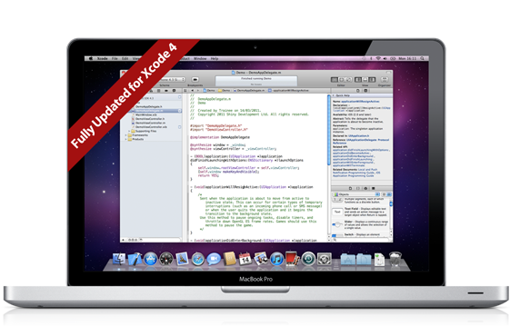

Shiny Development can tailor an iPhone Development course to your organisation’s specific needs.
The course provides a cost effective way to bring your whole team up to speed, allowing them all to contribute to your development project from day one.

The course has been developed and is taught by Dave Verwer, developer of Balloons! (http://balloonsapp.com) and several other successful iPhone applications. Dave describes himself as primarily an iPhone and iPad developer rather than a full time trainer and so has experience in all aspects of designing, developing, shipping and marketing successful iPhone applications. Dave has been developing with the iPhone SDK since it was first released and previously to that developed several applications for Mac OS X.
Trainees should be proficient developers with a good knowledge of a modern, object oriented language such as Java, C#, Python, Ruby or C++.
Having programmed in a variety of high level programming environments I had become frustrated and a little stressed when trying to self teach myself Objective-C and Xcode. After a few days of trying, I decided a course was the way to go.
With in the first half of the first day, most of my headaches understanding objective-C where resolved, and by the end of the first day the Xcode environment was no longer the strange land I have been staring at for days. Concepts where explained simply and backed up with demonstrations that reinforced the learning process. This is how, when I look back, such a lot of information is able to be condensed into such a short course.
When enquiring about courses and explaining our business with online video content, Dave at Shiny Development offered us a customised course that took the core of the standard 'group' course and tailored it to our needs. This really helped, by ensuring there was a good understanding of the fundamentals of iPhone development then advancing with video specific classes and objects, our development was massively accelerated - so much so, I had our first app programmed by the end of the first week after the course!